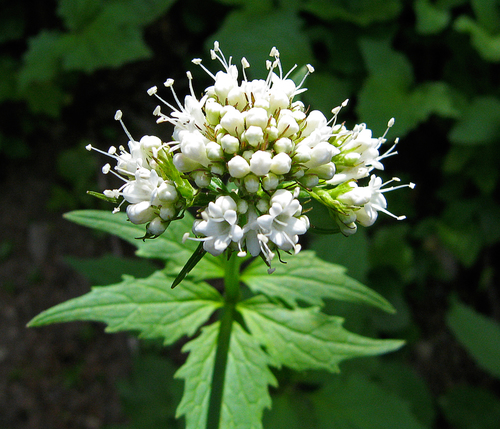

Boloria epithore butterfly / moth
Lesser fritillaries, boreal and alpine.
6 documented plant relationships.

 Douglas Goldman, some rights reserved (CC BY-SA), uploaded by Douglas Goldman")
 Tom Norton, some rights reserved (CC BY), uploaded by Tom Norton")

 gwt2102, some rights reserved (CC BY)")
 Douglas Goldman, some rights reserved (CC BY-SA), uploaded by Douglas Goldman")